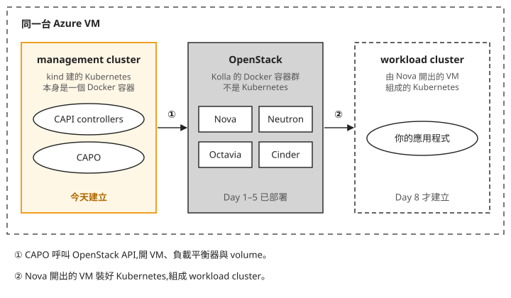
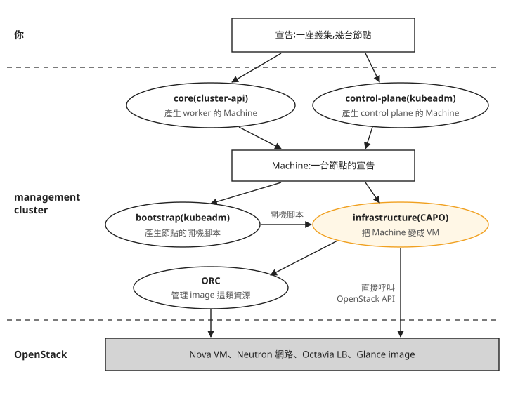
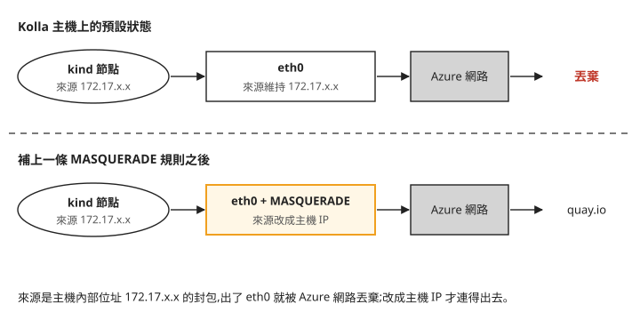

Day 6: Cluster API 管理叢集——management cluster、provider 與 kind 的對外 NAT¶
到 Day 5 為止,這朵雲能開 VM、建網路、掛硬碟、配負載平衡器,也能用 Heat 一次建好一組資源。Day 8 要再往上走一步:使用者下一行指令,雲就交出一座可以用的 Kubernetes。這背後有一連串的工作要有人代勞:開幾台 VM、在每台裝好 Kubernetes、把節點加進同一座叢集,壞了要修、要升版時一台台換新。這一章先把負責這些工作的程式裝起來,Day 7 再把它接到 OpenStack 的 Magnum 服務上。
這組程式叫 Cluster API,它本身只能跑在一座 Kubernetes 裡,所以今天要在同一台主機上先開一座小 Kubernetes 給它用。在 Kolla 部署過的主機上,這座小叢集一開起來就會遇到一個問題:裡面所有 pod 都拉不到 image。讀完這一章,看到這個症狀時,你會知道原因是 kind 的網段少了一條 NAT 規則,也知道為什麼該只替 kind 補這一條規則,而不是去改 Docker 的全域設定。
開始之前¶
這一章需要 Day 1–5 部好 OpenStack 的那台 Azure VM。從這一章起會用到 Kubernetes 的基本操作:kubectl(Kubernetes 的命令列工具)、pod、deployment、namespace。如果這些對你是新的,先花半小時做官方的 Learn Kubernetes Basics 互動教學再回來。其他會用到的 Kubernetes 名詞,第一次出現時會說明。
Cluster API:把「一座 Kubernetes」寫成宣告¶

手動裝一座 Kubernetes,要開 VM、在每台裝 kubeadm(Kubernetes 官方的叢集安裝工具)、在第一台初始化 control plane(負責管理整座叢集的節點,上面跑著 API server,也就是接收所有 kubectl 請求的元件)、再讓其他 worker 節點 join 進來。換一座叢集就得從頭再做一次,之後的升版和修復也全靠人。
Cluster API(簡稱 CAPI)換一種做法:你寫一份宣告,例如「一座叢集,1 台 control plane、2 台 worker,Kubernetes v1.34」,交給 Kubernetes 保存,剩下的由程式完成。Kubernetes 原本不認得「一座叢集」這種東西,CAPI 用 CRD(自訂資源定義,讓 Kubernetes 多認得一種資源型別)把 Cluster、Machine 這些型別加進去,於是宣告一座叢集就跟宣告一個 deployment 一樣,是一份 YAML。
真正動手的是 controller:一支常駐在 Kubernetes 裡的程式,不斷比對「宣告要幾台」和「現在有幾台」,少了就開、多了就刪、壞了就換。這個比對再補齊的動作叫 reconcile。你在 Learn Kubernetes Basics 裡看過 deployment 讓 pod 維持指定數量,做的就是同一件事;CAPI 的 controller 管的對象換成了 VM 和整座叢集。
controller 是在 Kubernetes 裡跑的程式,所以要先有一座 Kubernetes 給它們跑。這座叢集叫 management cluster(管理叢集),只跑 CAPI 的 controller,不跑你的應用程式。CAPI 依照宣告開出來、真正跑應用程式的叢集,叫 workload cluster。CAPI 的標誌是一隻烏龜馱著更小的烏龜,官方的說法是 "It's Kubernetes all the way down":用一座 Kubernetes 去管理其他 Kubernetes。
到 Day 8 為止,同一台 Azure VM 上會有三套系統。下面這張圖把它們並排,由左到右是指令傳遞的方向:

我們可以從圖上看到兩件事:
- OpenStack 本身不是 Kubernetes。 Kolla 部署的是一群 Docker 容器,CAPI 的 controller 沒辦法裝進去,所以才需要另外開一座 management cluster。
- management cluster 不直接開 VM。 它透過 OpenStack API 請 Nova 開,workload cluster 的節點是 OpenStack 裡的 VM。之後排錯時,先分清楚問題出在哪一塊:controller 沒反應看 management cluster,VM 開不起來看 OpenStack。
為什麼 management cluster 用 kind¶
management cluster 只跑幾個 controller,不需要多台機器。單機 lab 用 kind(Kubernetes in Docker)最省事:它把一整座 Kubernetes 的節點裝進一個 Docker 容器,一行指令就能建好或刪掉。
正式環境不會這樣做。management cluster 停擺時,已經建好的 workload cluster 照常運作,但擴充、升版、替換壞掉的節點都要等它恢復,所以正式環境會用一座專用、高可用的叢集來當 management cluster。
CAPI 的四個 provider¶
CAPI 的功能拆成幾個 provider,每個 provider 是一組 controller,負責一部分工作。這一章要裝四個,步驟 4 的 clusterctl init 用四個旗標各指定一個。下面這張圖畫的是宣告一座叢集之後,各個 provider 依序做的事:

照著圖由上往下看:
- core(
cluster-api)和 control-plane(kubeadm)把一座叢集的宣告拆成一台台 Machine(一台節點的宣告)。control-plane provider 專管 control plane 那幾台的數量與升版。 - bootstrap(
kubeadm)替每台 Machine 產生開機時執行的腳本,內容是用 kubeadm 初始化 control plane,或 join 進叢集。 - infrastructure 是唯一跟雲打交道的 provider。對 OpenStack 來說是 CAPO(Cluster API Provider OpenStack),它把 Machine 變成一台 Nova VM,把開機腳本交給這台 VM,也替叢集的 API server 建 Octavia 負載平衡器。這些都是 CAPO 直接呼叫 OpenStack API 完成的。
- 圖上 CAPO 旁邊的 ORC 是 CAPO 依賴的另一個元件,負責 image 這類資源,步驟 4 會說明。
步驟 1:安裝命令列工具¶
先決定版本。前三個 provider 跟 CAPI 本身同版號,CAPO 自己有一套版號。這一章不挑最新版,而是用 Day 7 那個 Magnum driver(vexxhost 的 magnum-cluster-api)測過的組合。
這組版本取自 magnum-cluster-api v0.37.0 的 hack/setup-capo.sh。這是它的 CI(每次程式改動時自動跑的測試流程)用來架設 management cluster 的腳本,裡面固定使用 CAPI v1.13.2、CAPO v0.14.4、ORC v2.2.0。之後要升版,也先看這個腳本換成了哪一組。
下面一次裝四個工具:kubectl、kind、clusterctl(CAPI 的命令列工具,版本要跟 CAPI 一致,所以是 v1.13.2)和 helm(Kubernetes 的套件管理工具)。helm 這一章用不到,Day 16 往 workload cluster 安裝 CSI 驅動時會用它,這裡先一起裝好。kind 要用一般使用者身分操作 Docker,所以最後把使用者加進 docker 群組:
# kubectl / kind / clusterctl(=CAPI 版) / helm
curl -sLo /tmp/kubectl https://dl.k8s.io/release/v1.36.2/bin/linux/amd64/kubectl
curl -sLo /tmp/kind https://kind.sigs.k8s.io/dl/v0.32.0/kind-linux-amd64
curl -sLo /tmp/clusterctl https://github.com/kubernetes-sigs/cluster-api/releases/download/v1.13.2/clusterctl-linux-amd64
sudo install -m0755 /tmp/{kubectl,kind,clusterctl} /usr/local/bin/
curl -sSfL https://raw.githubusercontent.com/helm/helm/main/scripts/get-helm-3 | sudo bash
# kind 需要「非 sudo」docker → 把使用者加進 docker group(需新 ssh session 生效)
sudo usermod -aG docker azureuser
azureuser 是 Day 0 建 VM 時設定的登入帳號,如果你用了別的名稱,換成自己的帳號(whoami 會印出來)。群組變更要重新登入才生效,所以裝完先登出,再 SSH 進來,才繼續下一步。
步驟 2:建 management cluster¶
用 kind 建一座叫 capi-mgmt 的叢集,--wait 120s 讓指令等到 control plane 就緒才返回。kind 會順便把這座叢集的連線資訊寫進 kubeconfig(kubectl 用來連叢集的設定檔,預設在 ~/.kube/config,記著 API server 的位址和登入憑證),並設成預設對象,所以接著就能用 kubectl 查它:
kind create cluster --name capi-mgmt --wait 120s # kindest/node v1.36.1
kubectl get nodes # control-plane Ready
kubectl get nodes 應該只列出一個節點 capi-mgmt-control-plane,狀態 Ready。這個節點就是一個 Docker 容器,docker ps 也看得到同名的容器,下一步會直接進到這個容器裡測試網路。
Kolla 改過 Docker 的網路設定¶
叢集建好了,但在 Kolla 主機上,它還連不到外面。原因在 Day 1 的部署:Kolla 為了 OpenStack 改過這台主機的 Docker 全域設定(/etc/docker/daemon.json),其中兩項跟今天有關:
iptables: false:Docker 不再自動寫任何防火牆或 NAT 規則。OpenStack 的容器全部直接使用主機的網路,網路由 Neutron 和 OVN 自己管理,Kolla 不希望 Docker 動到這些規則。bridge: none:Docker 不建立預設的docker0網橋。
kind 的節點卻是一般的 Docker 容器,接在 kind 自己建立的網路上,拿到的是主機內部的位址(在這台主機上是 172.17.x.x)。這種位址出不了主機,所以 Docker 平常會自動加一條 NAT 規則(網路位址轉換):容器的封包離開主機前,把來源位址改成主機自己的 IP。iptables 裡做這件事的規則叫 MASQUERADE。
下面這張圖比較有沒有這條規則時,kind 節點送出的封包會怎麼走:

兩列唯一的差別在 eth0 那一格。iptables: false 讓 Docker 不寫這條規則,kind 節點的封包帶著 172.17.x.x 出去就被丟掉。這時 kind 裡的 pod 拉 image 會一律 i/o timeout,而主機自己連 quay.io 完全正常,很容易誤以為是 quay.io 或 kind 本身有問題。
修法有兩個方向。把 daemon.json 的 iptables 改回 true,Docker 會重新管理整台主機的防火牆規則,而且要重啟 Docker 才會生效,所有 OpenStack 容器都會跟著重啟。Docker 接管後會在 iptables 寫入自己的規則鏈;依 Docker 官方文件,它負責 IP 轉送時還會把轉送(FORWARD)的預設政策設成 DROP,Day 2 讓雲裡的 VM 經主機轉送出去的流量就可能被擋下。另一個方向是只替 kind 的網段手動加一條 MASQUERADE,Kolla 的設定完全不動。這一章用後者。
步驟 3:補上 kind 的對外 NAT¶
這一步不做,步驟 4 的 clusterctl init 一定會失敗。iptables 的規則分成幾張表,NAT 規則放在 nat 表;表裡的 POSTROUTING 是封包即將從網卡送出前經過的那一串規則,改來源位址就在這裡做。下面第一行在 POSTROUTING 替 172.17.0.0/16 這個網段加一條 MASQUERADE,-o eth0 表示只處理從 eth0 出去的封包。Day 2 替 OpenStack 的對外網路 172.24.4.0/24 加過同樣形式的一條(在 ext-net-fixup.service 裡),這裡照它的寫法。第二行進到 kind 節點的容器裡,試著連 1.1.1.1 的 443 port:
sudo iptables -t nat -A POSTROUTING -s 172.17.0.0/16 -o eth0 -j MASQUERADE
# 驗證:kind node 應能連外
docker exec capi-mgmt-control-plane bash -c 'cat </dev/null >/dev/tcp/1.1.1.1/443 && echo OK'
印出 OK 就表示 kind 節點連得出去了。
172.17.0.0/16 只在 Kolla 主機上成立:bridge: none 讓 172.17 沒有被 docker0 佔用,kind 建網路時就分到這一段。一般主機上 172.17 是 docker0,kind 通常會拿到 172.18 以後的網段,這時上面的規則對不到任何封包,症狀跟沒加一樣。不確定的話,改用下面的寫法,先查出 kind 網路實際的網段再帶入,取代上面的第一行(兩種擇一,不要都跑,否則規則會重複):
KIND_CIDR=$(docker network inspect kind -f '{{(index .IPAM.Config 0).Subnet}}')
sudo iptables -t nat -A POSTROUTING -s "$KIND_CIDR" -o eth0 -j MASQUERADE
bridge: none 對這門課的影響不只這一處,Day 28 的Docker 連接埠映射沒有生效會再遇到。
用 iptables 加的規則重開機就會消失,而 Day 0 設了每晚自動關機。所以再寫一個開機時執行一次的 systemd 服務,把同一條規則補回去。ExecStart 先用 -C 檢查規則在不在,不在才用 -A 加,重跑幾次都只會有一條。下面用 sudo tee 把設定檔寫進 /etc/systemd/system/kind-masquerade.service。如果你的網段不是 172.17.0.0/16,把 ExecStart 裡的兩處都換成自己的網段:
sudo tee /etc/systemd/system/kind-masquerade.service <<'EOF'
[Unit]
Description=MASQUERADE for kind mgmt-cluster egress (workaround Kolla docker iptables=false)
After=docker.service
Wants=docker.service
[Service]
Type=oneshot
RemainAfterExit=yes
ExecStart=/bin/bash -c "iptables -t nat -C POSTROUTING -s 172.17.0.0/16 -o eth0 -j MASQUERADE 2>/dev/null || iptables -t nat -A POSTROUTING -s 172.17.0.0/16 -o eth0 -j MASQUERADE"
[Install]
WantedBy=multi-user.target
EOF
接著讓 systemd 重新讀取設定,啟用這個服務並立刻執行一次:
最後列出 nat 表 POSTROUTING 的規則,確認 kind 網段那條只出現一次,旁邊還會看到 Day 2 加的那條 172.24.4.0/24:
完整的診斷過程,整理在排錯手冊的 kind × Kolla 的 docker iptables 衝突。
步驟 4:先裝 ORC,再 clusterctl init¶
provider 圖上 CAPO 旁邊還有一個 ORC(openstack-resource-controller)。CAPO 從 v0.12 起,把部分 OpenStack 資源(目前主要是 image)的建立、查詢、刪除交給這個獨立的 controller:CAPO 產生描述這類資源的宣告(例如 Image),ORC 再去呼叫 OpenStack API。VM、網路、負載平衡器仍由 CAPO 自己呼叫 API。這些宣告的型別由 ORC 提供,所以 ORC 要在 CAPO 之前裝好,漏了這一步,CAPO 會因為缺少型別而起不來。
clusterctl init 會一次裝好四個 provider。三個 export 是 CAPI 的功能開關,照 driver 的 CI 腳本打開。依 CAPI 文件,EXP_CLUSTER_RESOURCE_SET 讓新叢集建好後自動套用指定的資源;EXP_KUBEADM_BOOTSTRAP_FORMAT_IGNITION 讓開機腳本除了 cloud-init 也能用 Ignition 格式(Flatcar 這類作業系統使用的開機設定格式);CLUSTER_TOPOLOGY 開啟 ClusterClass(用一份範本定義叢集的樣子)。本課沒有逐一驗證每個開關的作用,只確認照這組設定能裝好:
# 先裝 ORC(CAPO v0.14 依賴)
kubectl apply -f https://github.com/k-orc/openstack-resource-controller/releases/download/v2.2.0/install.yaml
# clusterctl init(EXP 旗標比照 setup-capo.sh)
export EXP_CLUSTER_RESOURCE_SET=true
export EXP_KUBEADM_BOOTSTRAP_FORMAT_IGNITION=true
export CLUSTER_TOPOLOGY=true
clusterctl init \
--core cluster-api:v1.13.2 \
--bootstrap kubeadm:v1.13.2 \
--control-plane kubeadm:v1.13.2 \
--infrastructure openstack:v0.14.4
# clusterctl 會自動先裝 cert-manager(v1.20.2),不需手動處理
clusterctl init 第一件事是裝 cert-manager(在叢集裡自動簽發和更新 TLS 憑證的元件,CAPI 的 controller 靠它取得憑證),等它就緒才裝四個 provider。如果輸出停在 Waiting for cert-manager to be available...,最後以 context deadline exceeded 結束,幾乎都是步驟 3 沒做好,處理方式見疑難排解:clusterctl init 卡在等 cert-manager。
步驟 5:確認四個 controller 都在跑¶
四個 provider 各自裝在自己的 namespace,每個有一個 deployment。下面的迴圈逐一等它們 rollout 完成(rollout 指 deployment 把 pod 建好並等到就緒的過程),最後用 kubectl get providers 列出 clusterctl 記下的安裝紀錄:
for ns_dep in \
capi-system/capi-controller-manager \
capi-kubeadm-bootstrap-system/capi-kubeadm-bootstrap-controller-manager \
capi-kubeadm-control-plane-system/capi-kubeadm-control-plane-controller-manager \
capo-system/capo-controller-manager; do
kubectl -n ${ns_dep%/*} rollout status deploy/${ns_dep#*/} --timeout=180s
done
kubectl get providers -A
看結果時注意兩處。第一,迴圈的四次 rollout status 都要回報成功;任何一個逾時,先看疑難排解:kind 裡所有 image 拉取都 i/o timeout。第二,kubectl get providers -A 的版本欄:core、bootstrap、control-plane 三筆是 v1.13.2,infrastructure 那筆是 openstack v0.14.4,跟步驟 1 選的組合一致。這個迴圈沒有檢查 ORC 和 cert-manager:ORC 的 orc-controller-manager 和 cert-manager 的三個 deployment 各在自己的 namespace 裡,也應該都在跑。
做到這裡,management cluster 裡還沒有任何叢集的宣告,controller 只是在待命。Day 7 把 Magnum 接上來之後,宣告才會從 Magnum 寫進這裡。
疑難排解¶
kind 裡所有 image 拉取都 i/o timeout¶
症狀:kind 叢集裡的 pod 全部卡在 ImagePullBackOff,事件裡是 dial tcp ...:443: i/o timeout,包括 cert-manager、ORC、CAPI、CAPO。
原因:Kolla 把 Docker 設成 iptables: false,kind 網段沒有 MASQUERADE 規則,見Kolla 改過 Docker 的網路設定。
修法:照步驟 3 補規則。要確認是不是這個原因,依序檢查:
- 主機自己連 quay.io 正常,問題就在 kind 這一層。
- 在 kind 節點裡連任意外部 IP(步驟 3 的
1.1.1.1:443)也失敗,就跟 quay.io 無關,是整條對外連線斷了。 - 連線在 TCP 握手階段就失敗,可以排除 MTU(單一封包的大小上限)設錯的可能,MTU 不對通常只會讓大封包出問題。
sudo iptables -t nat -S POSTROUTING裡沒有 kind 網段的 MASQUERADE,就是這個原因。
clusterctl init 卡在 Waiting for cert-manager to be available¶
症狀:clusterctl init 停在 Waiting for cert-manager to be available...,最後以 context deadline exceeded 結束。
原因:cert-manager 本身沒有問題,是它的 pod 拉不到 image,原因同上一項。
修法:先照步驟 3 補好規則。卡在 ImagePullBackOff 的 pod 會自己隔一段時間重試,間隔會越拉越長,所以不刪也會恢復,只是要多等一陣子。想立刻重拉,可以刪掉 cert-manager 的 pod,讓它們馬上重建(非必要):
等 cert-manager 的 pod 都跑起來之後,重跑步驟 4 同一條 clusterctl init。它會發現 cert-manager 已經在了,直接接著裝四個 provider。
kind 節點優先用 IPv6 解析,拉 image 更慢¶
症狀:在 kind 節點裡 getent hosts quay.io 回傳 IPv6 位址。
原因:kind 的 Docker 網路帶有 IPv6 位址(fc00::/64 這類只在內部有效的位址)和 IPv6 預設路由,但 Azure VM 沒有 IPv6 對外連線,先試 IPv6 會多耗一段時間。
修法:補好步驟 3 的 IPv4 規則之後,連線會改走 IPv4,不影響這一章的操作,不需要額外處理。想完全關掉,可以在 kind 的叢集設定檔裡停用 IPv6,本課沒有驗證這個做法。
VM 重開機後 management cluster 沒有恢復¶
症狀:隔天開機後 kubectl get nodes 連不上,或 controller 沒有回到 Running。
原因:步驟 3 的 kind-masquerade.service 會在開機時補回 NAT 規則,但 kind 節點的容器預設不會在 VM 重開機後自動恢復到正常狀態。
修法:用 management cluster 之前,先 docker start capi-mgmt-control-plane,等它穩定後確認 kubectl get providers -A 四筆都在。如果起不來,就刪掉叢集重建:
然後重做步驟 2、4、5。做完步驟 2 先重跑步驟 3 的 docker exec 連線測試,確認 kind 節點連得出去,再做步驟 4。重建的叢集 API port 也會變,Day 7 放進 Magnum 的 kubeconfig 要一起更新。
想一想¶
- 你在另一台沒有部署 Kolla 的 Ubuntu 主機上,Docker 是安裝後的預設設定,用 kind 建了一座叢集。這台主機也需要步驟 3 那條 MASQUERADE 規則嗎?如果照抄
172.17.0.0/16那一行,會發生什麼事? - 同事建議把
/etc/docker/daemon.json的iptables改成true,理由是「以後在這台主機跑任何容器都不用再補規則」。在一台已經跑著 OpenStack 的主機上,你會怎麼回應? - Day 8 建好一座 workload cluster 之後,kind 的容器停了。workload cluster 上已經在跑的應用程式會受影響嗎?這時剛好有一台 worker VM 壞了,它會被自動換掉嗎?要等到什麼時候?
小結¶
這一章在 Kolla 主機上用 kind 開了一座 management cluster,裝好 CAPI 的四個 provider 和 CAPO 依賴的 ORC。之後 Day 7 的 Magnum 和 Day 8 的 workload cluster,都是透過這裡的 controller 去呼叫 OpenStack API。過程中最容易卡住的是網路:Kolla 為了 OpenStack 讓 Docker 不再管 iptables,一般 Docker 容器因此沒有對外的 NAT。以後在 Kolla 主機上跑任何一般網路模式的容器,看到拉 image 逾時、主機自己卻連得出去,先查 POSTROUTING 裡有沒有那個容器網段的 MASQUERADE,再只替那個網段補規則。
延伸閱讀¶
想再深入,可以從這幾份開始:
- Cluster API Quick Start —— CAPI 官方入門;本章 kind 加 clusterctl 的流程就是它的 OpenStack 版。
- CAPO:Cluster API Provider OpenStack —— 本章裝的那個 provider 的官方手冊,OpenStackCluster、OpenStackMachine 資源的定義都在這。
- kind 官方文件 —— 用 Docker 容器跑 Kubernetes 的工具;設定檔選項與已知限制。
- Docker 的封包過濾與防火牆 —— Docker 平常替容器寫了哪些 iptables 規則,關掉之後少了什麼。
下一步(Day 7)¶
management cluster 已經在待命,但 OpenStack 這邊還沒有服務會把建叢集的請求送過來。Day 7 部署 Magnum,並把這座 management cluster 的 kubeconfig 交給它,讓 openstack coe cluster create 能把宣告寫進這裡。
Cluster API 與 kind 標誌為 CNCF(Linux Foundation)之商標與專案資產,此處作社群教學用途。